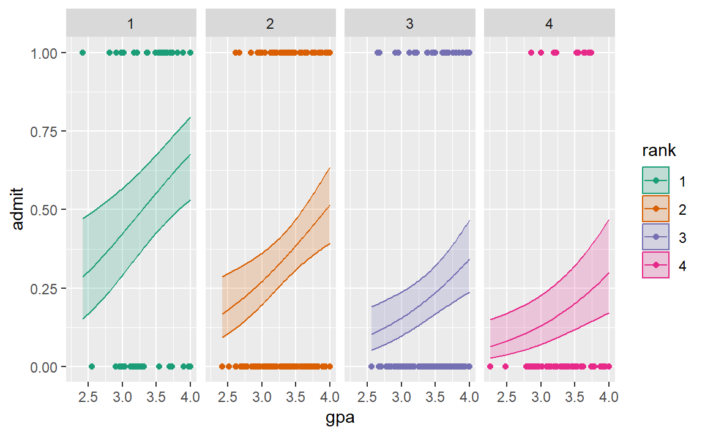

(4 points) A researcher is interested in studying how (if?) GRE (Graduate Record Exam scores), GPA (grade point average) and prestige of undergraduate institution are associated with admission into graduate school. The response variable, Admit, is a binary variable (1 == admit). This dataset can be found in admissions.csv available for download right underneath where you downloaded/opened this homework assignment. Treat the variables GRE and GPA as continuous, and treat RANK, which takes values 1 through 4, as a factor variable. A rank of 1 indicates that the student’s undergraduate institution has the highest prestige, while a rank of 4 indicates that it has the lowest prestige.
Fit a logistic regression model to these data, with the variable admit as the response and gpa, gre, and rank as explanatory variables. Fit another model without gre. Comment on how these models are different.
Produce a scatter plot of admit against GPA and overlay 4 separate fitted lines, one for each rank, from the regression with gpa and rank as explanatory variables.
logistic <-function(x){exp(x)/(1+exp(x))}# Obtain 95% pointnwise confidence bands from predict.glm()glm_pred <-predict.glm(mod_red, type="link", se.fit=TRUE)low <- glm_pred$fit -1.96* glm_pred$se.fitupp <- glm_pred$fit +1.96* glm_pred$se.fit# back-transform everything to the data scaleglm_fit <-logistic(glm_pred$fit)glm_lower <-logistic(low)glm_upper <-logistic(upp)# augment the Donner data frameaugment_df <-as.data.frame(cbind(ad, glm_fit, glm_lower, glm_upper))augment_df |>ggplot() +aes(y = admit, x = gpa, color = rank) +geom_point() +geom_line(aes(x = gpa, y = glm_fit, color = rank)) +geom_ribbon(aes(x = gpa, fill = rank, ymin = glm_lower, ymax = glm_upper), alpha = .2 ) +scale_fill_brewer(palette ="Dark2") +scale_color_brewer(palette ="Dark2")+facet_grid(cols =vars(rank) )

c. Summary
Write a short paragraph discussing your findings
It looks like the prestige of one’s undergraduate institution has an effect on admissions to grad school. With a 4.0 GPA, someone from a prestigious school has between 53% & 80% probability of getting admitted. Whereas someone with the same gpa from a low ranked school has between 17% & 47% probability of getting admitted.
(3 points) In 1846, the Donner and Reed families left Springfield, Illinois, for California by covered wagon. Along the way, more families and individuals joined the Donner Party, as it came to be known, until it reached its full size of 87 people. The group become stranded in the eastern Sierra Nevada mountains when the region was hit by heavy snows in late October. By the time the last survivor was rescued in April 1847, 40 of the 87 members had died from famine and exposure to extreme cold.
a. independence
One assumption underlying the correct use of logistic regression is that observations are independent of each other. Is there some basis for thinking this assumption might be violated in the Donner Party data?
There may be some violations of this assumption. The party was composed of families and groups that traveled together. Those groups are not independent. Families will share similar genetics. Their health may be affected as a group by their diets before the incident. Groups that travel together would share a similar effect.
donner = case2001 # donner |> head()
b. The over 50’s
Why should one be reluctant to draw conclusions about the ratio of male and female odds of survival for Donner Party members over 50? (Hint: Look again the graph of the Donner Party data from lecture, where status is plotted against age.)
There are fewer observations in the over 50 crowd, especially among the female group. This makes inference outside the bounds of the data precarious.
c. Survival is 50%
In this week’s lecture, it was found that the estimated logistic regression equation is:
\(\hat{logit(p)} = 1.63 − 0.078Age + 1.60Female\), where Female is an indicator variable equal to one for females and zero for males.
What is the age at which the estimated probability of survival is 50% for women? What about for men?
For the Donner party, at 41 years old the estimated probability of survival for women is 50%. It’s 21 for men.
3. The common brushtail possum
(3 points) The common brushtail possum of the Australia region is a bit cuter than its distant cousin, the American opossum. We consider 104 brushtail possums from two regions in Australia, where the possums may be considered a random sample from a larger population. The first region is Victoria, and the second region consists of New South Wales and Queensland.
We use logistic regression to differentiate between possums in these two regions. The outcome variable population takes value 1 if the possum is from Victoria and 0 if it is from New South Wales and Queensland. Five predictors are considered: sex_male, an indicator for a possum being male, head_length, skull_width, total_length, and tail_length. A full and reduced logistic model are summarized in the following table:
The variable head_length was taken out for the reduced model based on its p-value in the full model. Why did the remaining estimates change between the two models?
There was less information available to use in the equation. While head length may have been essentially useless, it was still being used in the full model. Without it in there, whatever effect it was estimated to have had to be taken up by the other variables.
b. Probability it’s from Victoria?
Suppose we see a male possum with a 65 mm wide skull, a 32 cm long tail, and a total length of 80 cm. If we know this possum was captured in the wild in Australia, what is the probability that this possum is from Victoria (using the reduced model)?
a male possum
65 mm wide skull 32 cm long tail of 80 cm total length
The probability of this possum being from Victoria is estimated to be 100%. I am assuming that these were all given in the correct dimensions. If they were all supposed to be in mm or cm, then it could be different.
M <-1sw <-65/1000t <-32/100len <-80/100odds <-exp(33.5095) +exp(-1.4207*M) +exp(-0.2787*sw) +exp(0.5687*len) +exp(-1.8057*t)odds
[1] 3.572654e+14
prob <- odds/(1+ odds)prob*100
[1] 100
Making all of the measurements in meters, didn’t change it.